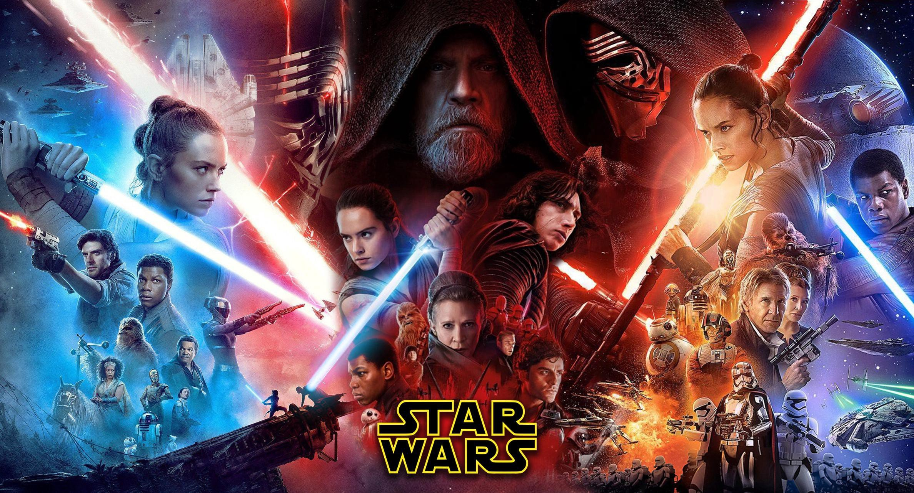

A trilogia Sequels, composta pelos duvidoso O Despertar da Força (2015), Os Últimos Jedi (2017) e Ascencão Skywalker (2019), onde nossos hérois conhecidos já estão velhos, Han e Leia tiveram um filho e se separaram, Luke se exilou após uma tragédia e ninguém sabe onde está, surge a Primeira Ordem, praticamente sendo um novo Império Galáctico, comandada pelo Supremo Líder Snoke, e seu aprendiz Kylo Ren, que assim como seu avô, foi para o lado sombrio. Porém, novos heróis surgem, Rey, uma garota de Jakku, Finn, um ex-Stromtrooper e Poe Dameron, piloto da Resistência e o adorável BB-8.
Aproximadamente 30 anos após a destruição da segunda Estrela da Morte, a Aliança Rebelde conseguiu restaurar a República Galáctica, mas remanescentes do Império Galáctico reorganizaram-se como a Primeira Ordem, cujo crescimento é combatido pela Resistência da República. Poe Dameron, um piloto da Resistência, é mandado ao planeta Jakku pela General Leia Organa para obter um mapa que, acredita-se, indica a localização de Luke Skywalker que está desaparecido há anos. Kylo Ren, está tentando roubar o mapa. Poe viaja até o planeta Jakku para tentar reaver o mapa. Quando Kylo Ren o ataca, ele coloca o mapa em seu droide, BB-8, e o manda fugir para longe. Kylo captura Poe e ordena o assassinato de todos no vilarejo onde ele foi encontrado. Um stormtrooper fica ultrajado com a brutalidade da Primeira Ordem e deserta para ajudar Poe, que passa a chamá-lo de Finn. Eles não conseguem escapar e caem de novo em Jakku, e Poe presumidamente morre. Enquanto isso, BB-8 fica na posse de Rey, uma jovem que sobrevive catando. Após Finn encontrar Rey e BB-8, a Primeira Ordem os localiza e os três escapam do planeta numa velha nave, a Millennium Falcon, que pertenceu a Han Solo.
Na fuga com a Millennium Falcon, esta é capturada por Han Solo e Chewbacca. Eles viajam ao planeta Takodana para encontrar Maz Kanata. No castelo de Maz, Rey é atraída pela Força até o porão, onde acha o sabre de luz que pertenceu a Anakin Skywalker e posteriormente ao seu filho, Luke. Ao tocar no sabre, ela tem uma visão do passado e futuro através da Força. Finn pega o sabre de luz. Quando a Primeira Ordem ataca o castelo, Rey é capturada por Kylo Ren, e os outros fogem, indo para a base da Resistência em D'Qar, onde descobrem que Han Solo e Leia se separaram após seu filho, Ben Solo, que estava sendo treinado por Luke para ser um Jedi, ter se voltado para o Lado Sombrio da Força e se tornado Kylo Ren. Enquanto isso, Kylo Ren usa a Força para interrogar Rey e obter o mapa direto de sua mente, mas é impedido pela forte conexão de Rey com a Força.Han, Chewbacca e Finn são enviados para desativar o escudo, de modo que as naves da Resistência possam atacar. Finn, entretanto, apenas quer salvar Rey. Após encontrá-la, eles colocam explosivos para sabotar a arma da Starkiller. Han vê Kylo Ren e o confronta; Kylo parece hesitante sobre abandonar o Lado Sombrio da Força, mas acaba matando Han Solo, fato que Leia sente através da Força. Em um acesso de fúria, Chewbacca atira em Kylo Ren, ferindo-o seriamente no torso
Os explosivos causam dano à arma Kylo Ren, ferido, confronta Finn, que usa o sabre de luz Skywalker mas é derrotado. Kylo Ren tenta pegar o sabre de luz, mas é Rey que consegue atraí-lo, e eles entram em confronto. Rey chega perto de derrotá-lo. A Starkiller é destruída e ambos escapam: Kylo Ren e General Hux vão encontrar-se com Snoke, e os outros retornam a D'Qar, onde o mapa completo é composto com a ajuda de R2-D2. Rey viaja com Chewbacca e R2-D2 na Millennium Falcon para encontrar Luke Skywalker, que vive isolado num planeta remoto. Ao encontrá-lo, Rey oferece-lhe o antigo sabre de luz Skywalker.
Integrantes da Resistência liderados pela general Leia Organa abandonam sua base principal quando uma frota da Primeira Ordem alcança o planeta onde eles estão. Após a batalha, as naves da Resistência fogem na velocidade da luz. Leia repreende Poe Dameron por um contra-ataque que causou a perda de muitas vidas, entretanto, Hux está usando um rastreador que consegue seguir naves na velocidade da luz, e inicia uma perseguição com a Resistência. Durante um ataque, Kylo Ren hesita em atirar na nave líder da Resistência ao sentir que Leia, está lá, mas caças TIE atiram, matando muitos dos líderes que lá estavam. Leia consegue se salvar usando a Força, mas fica inconsciente e severamente ferida, e assume o comando a Vice-almirante Amilyn Holdo. Poe, Finn, BB-8 e a mecânica de naves Rose Tico pensam num plano para desarmar o dispositivo de rastreamento da Primeira Ordem e contactam Maz Kanata, que indica um mercenário quebrador de códigos.
Tendo chegado no planeta Ahch-To com Chewbacca e R2-D2 a bordo da Millenium Falcon, Rey encontra Luke Skywalker, que mesmo após saber da morte de Han Solo, recusa treina-lo por causa de Ben Solo, que tornou-se Kylo Ren. Convencido por R2-D2, que lhe mostra a gravação original de Leia pedindo ajuda a Ben Kenobi, Luke resolve iniciar Rey nos caminhos da Força. Luke e Kylo contam a Rey diferentes versões de que levou Kylo para o lado sombrio e Luke para o exílio. Rey vai embora de Ahch-To sem Luke, disposta a confrontar Kylo Ren, pois ainda sente que há luz dentro dele. Luke vê o espírito de seu mestre, Yoda, que destrói o templo Jedi de Ahch-To e lhe ensina que o fracasso é capaz de ensinar muito mais que o sucesso.
Finn, Rose e BB-8 seguem para Canto Bight e entram num cassino frequentado por ricos vendedores de armas. Na cadeia, eles encontram DJ, que diz ser capaz de quebrar os códigos que eles precisam. Com a ajuda de algumas crianças escravas, eles conseguem escapar de Canto Bight junto com DJ, e eles conseguem adentrar a nave, mas são descobertos pela Capitã Phasma. Enquanto isso, Rey chega na mesma nave da Primeira Ordem e é capturada por Kylo Ren, que a leva a Snoke. Rey tenta convencer Kylo a juntar-se Lado da Luz. Ao receber ordem para matar Rey, Kylo traí o seu mestre para salvá-la. Ele engana Snoke, matando-o, ao invés de matar Rey, após a batalha, Kylo revela que os pais de Rey eram dois sucateiros que a abandonaram em troca de bebida, e pede a Rey que se junte a ele para juntos governarem a galáxia. Rey recusa e pede que ele ajude a frota Resistência. Rey consegue escapar e Kylo autodeclara-se o novo Líder Supremo.
Recuperada, Leia neutraliza Poe e solta Amilyn Holdo que se sacrifica, permanecendo na nave principal para dar cobertura, enquanto as demais naves escaparam para o planeta Crait, que tem uma antiga base da Aliança Rebelde. As pequenas naves restantes conseguem entrar na antiga base da Aliança Rebelde em Crait. BB-8 liberta Rose e Finn, que escapam após derrotarem a Capitã Phasma, e juntam-se aos sobreviventes em Crait. Quando a Primeira Ordem chega no planeta, Poe, Finn e Rose juntam-se num ataque usando velhos armamentos, mas começam a perder a batalha. Chewbacca chega pilotando a Millenium Falcon com Rey e leva os caças TIE com ele, destruindo-os. Luke aparece e confronta Kylo sozinho, dando, à Resistência, tempo para escapar pelos fundos da base. Kylo tenta golpear Luke mas descobre que ele é apenas uma projeção, Luke ainda está em Ahch-To. Desafiamdo Kylo dizendo-lhe que não é o último Jedi, enquanto Rey levita pedras usando a Força, permitindo à Resistência escapar. Em Ahch-To, Luke, exausto pelo esforço da projeção, desaparece, unindo-se à Força. Os poucos integrantes da Resistência escapam a bordo da Millenium Falcon.
Em Mustafar, Kylo Ren obtem um localizador de onde está o ressuscitado Imperador. Partindo para Exegol, Kylo encontra Palpatine. Este revela que criou Snoke e que tem sido as vozes que levaram Kylo ao Lado Sombrio. O Imperador oferece um novo império a ele, com a condição de que Kylo matasse Rey. Na Millenium Falcon, Poe Dameron, Chewbacca e Finn recebem através de um espião da Primeira Ordem que pode ajudar a Resistência vencer a guerra. Diversos caças aparecem e eles fogem. Poe usa a velocidade da luz para chegar na base da Resistência. Lá na Resistência, enquanto treina, ela é distraída por visões compartilhadas com Kylo. Poe chega na base e revela à Resistência que Palpatine está vivo, possuindo a maior frota de naves que a galáxia já viu, a Ordem Final. O sistema não está em nenhum mapa estelar, Rey fala para Leia que, segundo Luke para chegar a Exegol seria preciso de um localizador. Poe, Finn, C3PO e Chewbacca se oferecem para ir junto com Rey na Millenium Falcon achar o localizador, então ela aceita. Enquanto isso na Primeira Ordem, Kylo descobre que um espião está infiltrado na Primeira Ordem.
Rey decide ir para Pasaana, onde estaria o localizador. Kylo descobre onde Rey está com um colar do sistema que ela recebeu em um festival. Um stormtrooper os avista e ameaça atirar, porém Lando os salva. Após batalha, eles caem em uma caverna, onde encontram a pista de Ochi, uma adaga contendo a posição do localizador. Ao sair da caverna, Rey sente a presença de Kylo vindo em direção a eles. Rey se afasta do grupo e espera por Kylo, enquanto Chewbacca é capturado pelos Cavaleiros de Ren. Ela foge com os amigos, triste pela aparente morte de Chewbacca. Na Primeira Ordem, Chewbacca estava vivo e havia sido capturado, porém estava com a adaga, que C-3PO conseguiria ler, mas suas configurações o proibirem de traduzir por ser uma língua Sith. Em Kijimi, o grupo consegue anular os dados de C-3PO, descobrindo que o localizador estaria em uma lua de Endor. Rey sente que Chewbacca está vivo dentro de um Destroyer, e vão resgatá-lo. Ao se infiltrarem, Rey procura a adaga, enquanto Poe e Finn resgatam Chewbacca, mas são capturados pelos stormtroopers, que quando serão levados para serem executados, General Hux mata os troopers, libertando-os, revelando ser o espião.
Enquanto isso, Rey encontra a adaga nos aposentos de Kylo Ren. Que lutam através da Força, Kylo diz que Palpatine mandou matar os pais de Rey. Eles, acidentalmente destroem o capacete de Vader durante a luta. Kylo ao encontrar Rey, conta que ela é a neta de Palpatine e são díade na Força, dois que são um na Força. Ela foge com os amigos na Falcon. Em seguida, General Pryde descobre a traição de Hux e o executa. Ao chegarem em Endor, descobrem que o localizador está nos destroços da Estrela da Morte, Rey decide ir até lá sozinha, ao entrar nos escombros, encontra o localizador, mas tem uma visão, dela mesma, do lado sombrio, Kylo Ren a segue e destrói o localizador, dizendo que vão a Exegol juntos, eles lutam e Rey vence, mas eles sentem a morte de Leia, que usou todas as suas forças para se comunicar com o filho. Rey cura o ferimento passando parte de sua própria energia vital para Kylo atráves da Força. Rey vai para Ahch-To, Poe e Finn veem Rey partindo na nave de Kylo. Então voltam para a base da Resistência e recebem a notícia da morte de Leia.
Em Ahch-To, Rey quer desistir de tudo, mas o fantasma de Luke aparece e diz para ela terminar com os Sith de uma vez, lhe dando o sabre que foi de Leia. Todos partem para Endor, no ares, os Destroyers de Palpatine praticamente dizimam as poucas naves da Resistência, mas Lando chega com ajuda de toda galáxia. Rey e Kylo (que voltou a ser Ben Solo, após ver seu pai em uma alucinação), confrontam Palpatine, que arremessa Ben para um precipício, o matando. Praticamente derrotada, Rey ouve as vozes dos antigos Jedis, e num último ataque, reflete os raios de Palpatine com o sabre de Luke e Leia, finalmente matando o Imperador. Rey está praticamente morta, mas Ben ressurge e com um beijo, passa o pouco de sua força vital, que morre nos braços de Rey. A galáxia toda comemora o fim definitivo dos Sith. Um tempo depois, Rey vai para Tatooine e enterra os sabres de Luke e Leia, já que agora possui um amarelo feito a partir de seu cajado, uma nômade vê a jovem e pergunta seu nome, e após Rey falar, questiona a ausência de sobrenome, que autodenomina Rey Skywalker, vendo os fantasmas de seus mestres no horizonte.